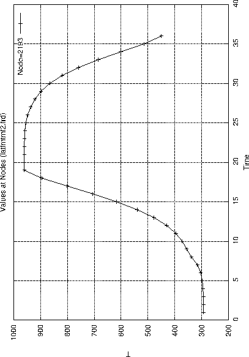

How to generate a time-history plot
So called time history plots can be created based on a previous displayed sequence of data-sets (see ”Toggle Dataset Sequence”) with the command ”graph”. It is also possible to use only the command line. For example:
- ds 1 e 3
- ds 1 2 10
- graph set t
will produce a time history plot for the nodes stored in set over all loadcases from 1 to 10 for the entity nr 3.
Or
will display the displacement in direction 1 for all loadcases.
For more details and other options look into the ”graph” command description.
Figure 11:
example of a time-history plot
|  |